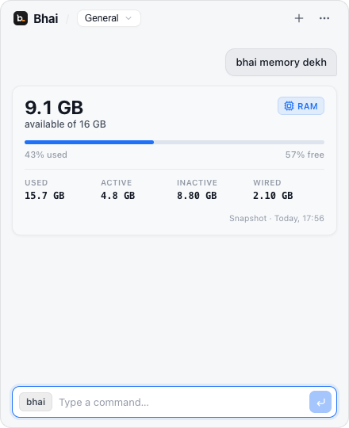

An open-source Mac app
Your next session starts with context.
bh-ai gives your coding agents a shared, local memory. Keep project decisions, tasks, and handoffs in one place, so you spend less time explaining things again.
macOS 14+ · Apple Silicon · Early-stage

Remember the why.
Save conventions and decisions. Review what your agents propose.
Pick up where you left off.
Share context across Cursor, Claude Code, Codex, and Antigravity through local MCP.
Keep it on your Mac.
Project memory works locally. No bh-ai account or API key needed.
Bhai MCP
The connection between your agents and your project memory. Through Model Context Protocol (MCP), an agent can retrieve context, save progress, and leave a handoff for the next session.
Connect your agentsyebata- Get the project’s context.
yesavekar- Save a progress checkpoint.
handoffsavekar- Leave a session handoff.
Run it on your Mac.
bh-ai is currently available as source. You’ll need an Apple Silicon Mac with macOS 14+, Node.js 24, and Xcode Command Line Tools.
git clone https://github.com/vibhanshu2001/bh-ai.git
cd bh-ai
npm ci
npm run build
npm run rebuild:electron
npm startOpen Bhai.
Find it in your menu bar, or press ⌘ Shift Space.
Add your project.
Choose + Add Project, select a repository, and review its details.
Connect your agents.
Open the project, choose Connect, and reload your agent’s MCP connection. Keep Bhai running while you work.
How does local memory work?
bh-ai stores project memory in a local SQLite database. Connected agents retrieve what you and your agents record through MCP. Depending on their settings, those agents may send retrieved context to their model providers. Read about data and security.